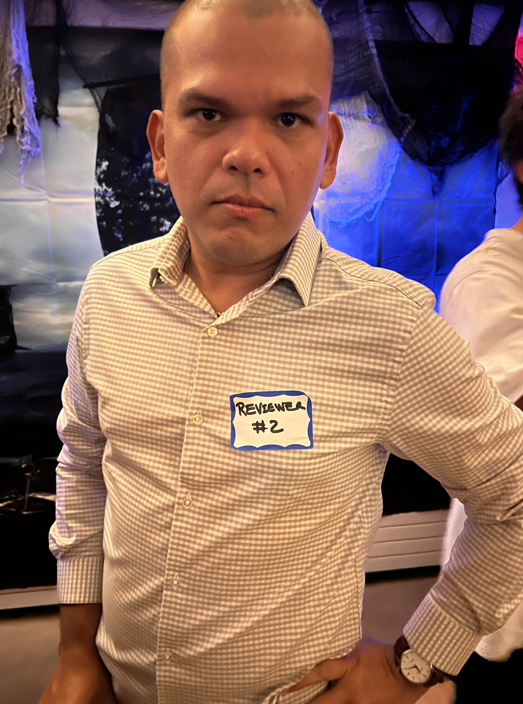

library(shiny)
library(shinyWidgets)
# Define the sentences vector
sentences <- c(
"The methodology lacks sufficient rigor and detail.",
"The experimental design does not adequately support the conclusions drawn.",
"The statistical analysis is insufficient or inappropriate for the data presented.",
"The sample size is too small to reach statistically significant conclusions.",
"There is a lack of control experiments, which undermines the validity of the findings.",
"The study lacks novelty and does not significantly advance the field.",
"The research question or hypothesis is not clearly stated or justified.",
"The study’s findings replicate existing literature without offering new insights.",
"The scope of the study is too narrow to be of interest to a broader audience.",
"The data provided are insufficient to support the conclusions.",
"The results are poorly presented or unclear.",
"The figures and tables are inadequate or do not add value to the manuscript.",
"There are inconsistencies in the data presented and the claims made.",
"The literature review is incomplete, overlooking important previous work.",
"The authors have not contextualized their findings within the existing body of research.",
"Relevant and recent studies are missing, which weakens the foundation of the research.",
"The manuscript lacks clarity and organization, making it difficult to follow.",
"The writing is overly technical, hindering comprehension for a broader audience.",
"There are numerous grammatical and typographical errors throughout the paper.",
"The abstract does not accurately reflect the content of the manuscript.",
"The conclusions are overstated and not fully supported by the data.",
"The authors overinterpret the significance of their findings.",
"The limitations of the study are not adequately discussed.",
"The manuscript does not meet the standards of this journal in terms of scope or quality.",
"The study does not offer sufficient impact to be of interest to the journal’s audience."
)
# Define UI for application
ui <- fluidPage(
titlePanel("Spin"),
sidebarLayout(
sidebarPanel(
actionButton("spin", "Spin the Wheel!", icon = icon("rotate")),
tags$br(),
pickerInput(
"sentencePicker",
"Your Sentence:",
choices = sentences,
selected = sentences[1],
width = "100%"
)
),
mainPanel(
textOutput("displaySentence"),
br(),
tags$style(type="text/css",
" #displaySentence {
font-size: 24px;
font-family: Arial, sans-serif;
text-align: center;
margin-top: 20px;
}")
)
)
)
# Define server logic
server <- function(input, output, session) {
# Observer for spin button
observeEvent(input$spin, {
# Update pickerInput with a randomly selected sentence
updatePickerInput(session, "sentencePicker", selected = sample(sentences, 1))
})
# Display selected sentence
output$displaySentence <- renderText({
input$sentencePicker
})
}
# Run the application
shinyApp(ui = ui, server = server)
This is the story of how a simple Shiny app became part of my costume for the Halloween TG at Scripps Oceanography.
I decided to shave my head a few days before Halloween. That same day, when my wife came home, she stared at me for a moment and said, “You look like a monk. You could go as Avatar for Halloween!” I didn’t say anything, but the idea sounded pretty cool! We had a bunch of work-related events on Thursday, the 31st, but on Friday, I joined her and other friends at TG.
I pulled everything together to be The Scientist Monk, but the weather (🥶) didn’t cooperate. So, I needed something last-minute. Then, an intrusive thought struck: grad school prepared you for last-minute solutions - it’s time to Shine-y! Two minutes later, I had written an AI prompt to generate a few sentences inspired by the infamous Reviewer #2, embedded them in a super simple Shiny spinner, and headed over to TG (Fig. 1).